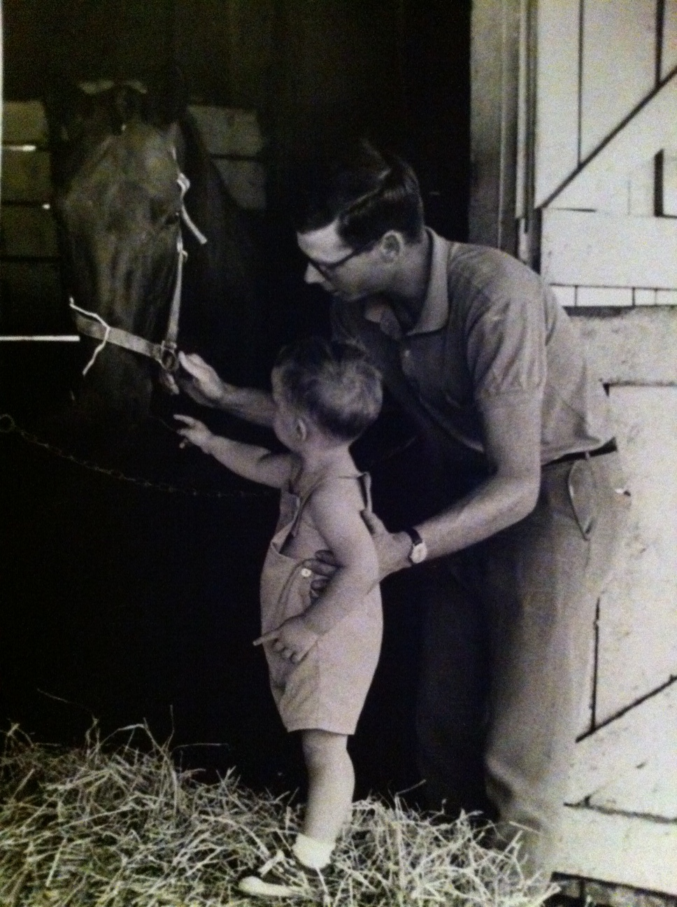
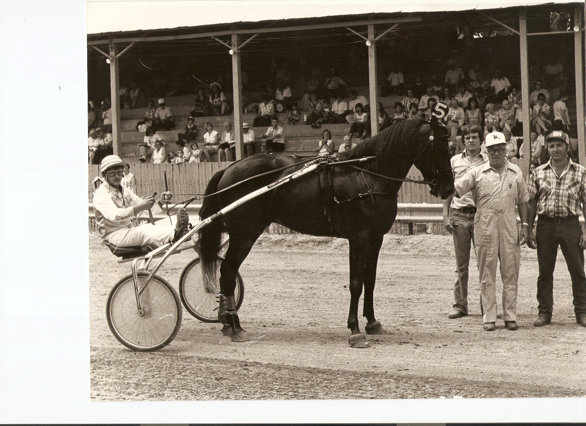

County fair, 1953. Charley King holding Ladies First, driven by Ohio Valley Stables trainer Willard Mikesell.

California, 1959. John King (left) and Charley King Jr. (right) with their old buddy Pat Waldo. Pat joined the Ohio Valley Stables when he was 15 years old.

1969. Charley King Jr. and Ohio Valley Stables trainer/driver James "Bull" Glum. Charley Jr., age 13, was the caretaker of this horse.

Lewis Parago (GG), holding C.K. Adios with Wilber and Mable Long.

Irvin Paul with caretaker Carter Campbell (left) and Charley King and sons with Abe Wilsker (far right).

Left to right: Howard Follick, Tommy Clark, Wilber Long, and George Dunigan.

Homer "Doc" Smith (left) and Charley King (right).

Richard Cox "Mr. Dick" holding Ordeal.

1965. Ohio Valley Stables trainer/driver Hugh McIntosh "Slugger" driving Sharon Irishman.

Charley King and business partner Richard Stevens · Hollywood Park, 1963, with Massa Ginger.

Kenny King and Bull Glum.

Wellington, New Zealand, 1968. Charley King racing a horse named Reporter.


{kind=link}
{kind=link}
{kind=link}
{kind=link}

Left to Right: Charlie King Jr. · John King · Charley King

Kenny King with Sir Grig · 1980
{kind=link}